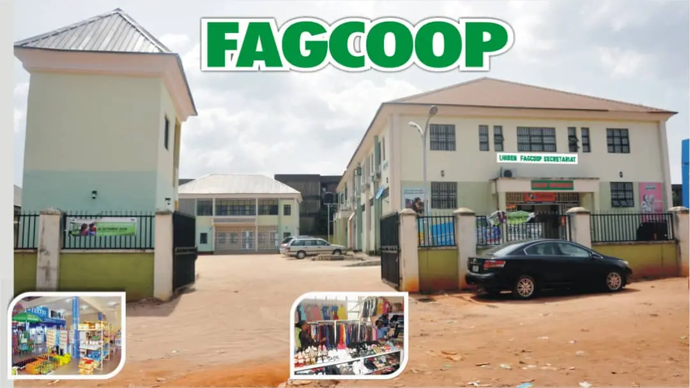

Our Mission
To meet the yearnings and aspirations of its members and society through committed service delivery.
Our Vision
To be the foremost grass-root Co-operative Society in Nigeria dictating the pace for co-operative development and contributing to the society.